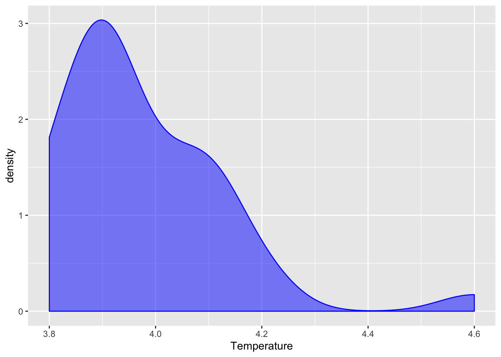
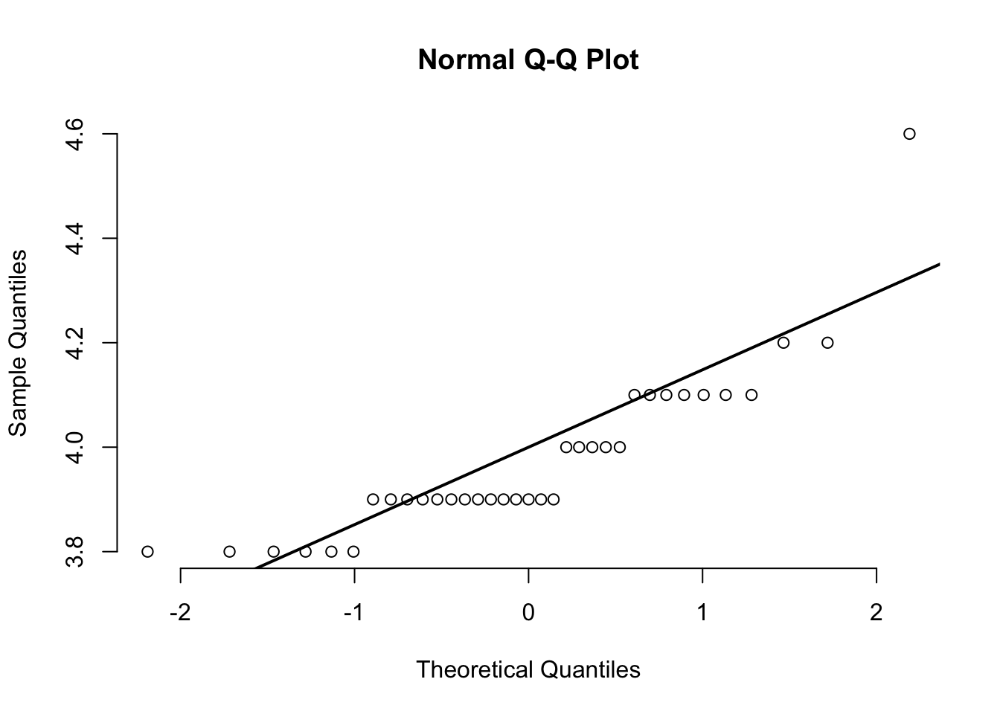
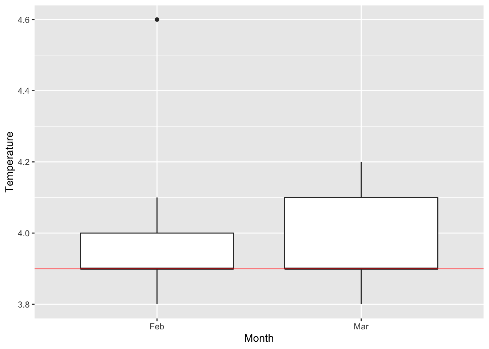
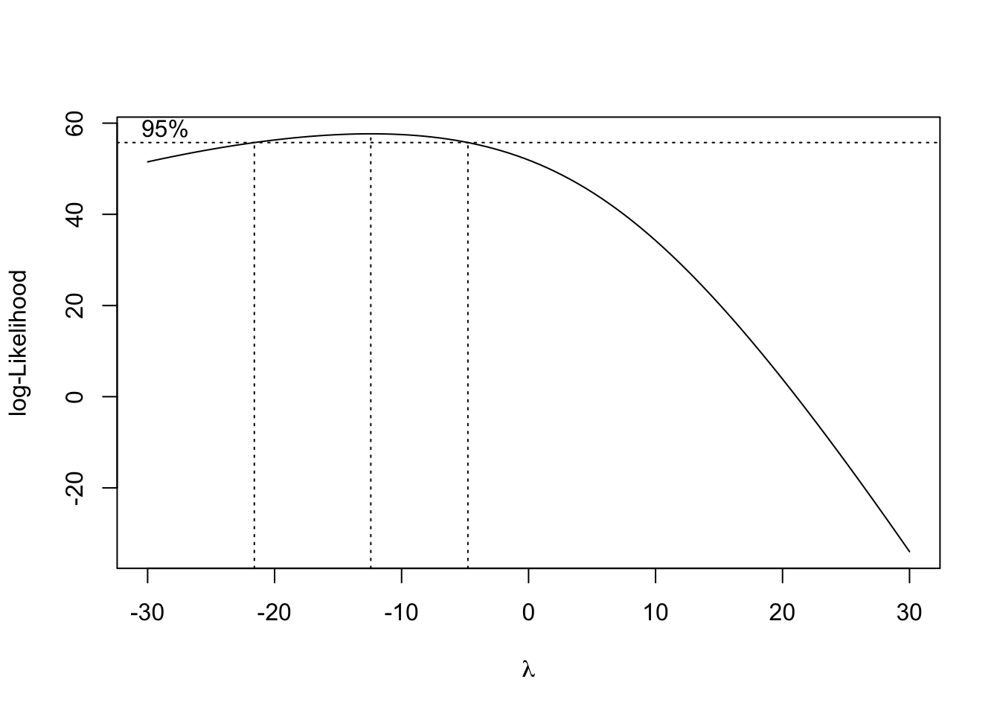
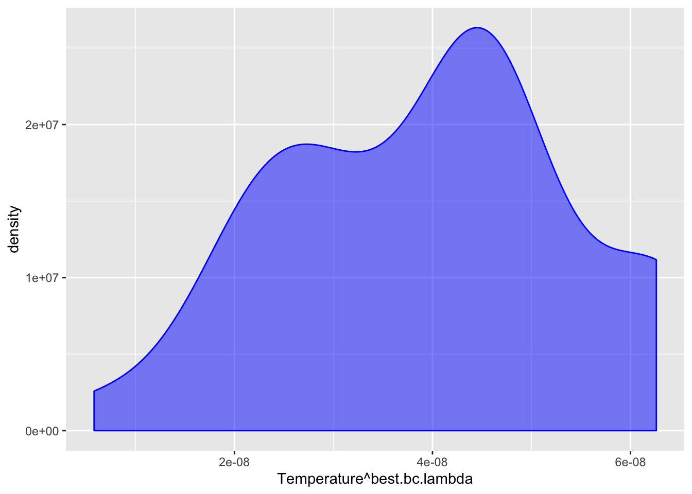

In Mar 2018, Cold Storage started getting complaints from their clients that they have been getting complaints from end consumers of the dairy products going sour and often smelling. On getting these complaints, the supervisor pulls out data of the last 35 days’ temperatures. As a safety measure, the Supervisor decides to be vigilant to maintain the temperature at 3.9°C or below. Hence the analyst team decides to go with 3.9°C as the upper acceptable value for mean temperature at an alpha value of 0.1. The objective is to find out whether there is a need for some corrective action in the Cold Storage Plant. Otherwise the problem might be due to the procurement side where Cold Storage is getting the Dairy Products from.
library(pacman)
p_load(readr, dplyr, plyr, ggplot2, car, fitdistrplus, sjstats, nortest, pwr, reshape2)CS.temp.2018 = read_csv("csv/Cold_Storage_Mar2018.csv")## Parsed with column specification:
## cols(
## Season = col_character(),
## Month = col_character(),
## Date = col_double(),
## Temperature = col_double()
## )CS.temp.2018summary(CS.temp.2018)## Season Month Date
## Length:35 Length:35 Min. : 1.0
## Class :character Class :character 1st Qu.: 9.5
## Mode :character Mode :character Median :14.0
## Mean :14.4
## 3rd Qu.:19.5
## Max. :28.0
## Temperature
## Min. :3.800
## 1st Qu.:3.900
## Median :3.900
## Mean :3.974
## 3rd Qu.:4.100
## Max. :4.600CS.temp.2018$Season = as.factor(CS.temp.2018$Season)
CS.temp.2018$Month = as.factor(CS.temp.2018$Month)
# Summarise the dataset.
summary(CS.temp.2018)## Season Month Date Temperature
## Summer:35 Feb:18 Min. : 1.0 Min. :3.800
## Mar:17 1st Qu.: 9.5 1st Qu.:3.900
## Median :14.0 Median :3.900
## Mean :14.4 Mean :3.974
## 3rd Qu.:19.5 3rd Qu.:4.100
## Max. :28.0 Max. :4.600CS.temp.2018.summary.month = ddply(.data=CS.temp.2018, .variable= ~ Month,
.fun=function(data) summary(data$Temperature))
CS.temp.2018.summary.monthThe overview includes the following:
dataset_detail = function(df) {
na_count = colSums(is.na(df))
# Details.
nulls_proportion = na_count / nrow(df) * 100
duplicated_nrows = nrow(which(duplicated(df)))
details = list(nulls_proportion, duplicated_nrows)
names(details) = c("nulls_proportion", "duplicated_nrows")
return(details)
}
CS.temp.2018.details = dataset_detail(CS.temp.2018)
CS.temp.2018.details## $nulls_proportion
## Season Month Date Temperature
## 0 0 0 0
##
## $duplicated_nrows
## NULLggplot(data=CS.temp.2018) +
aes(x=Temperature) +
geom_density(fill="blue", color="blue", alpha=.5)
qqnorm(CS.temp.2018$Temperature, pch=1, frame=FALSE)
qqline(CS.temp.2018$Temperature, lwd=2)
ggplot(data=CS.temp.2018) +
aes(x=Month, y=Temperature) +
geom_boxplot() +
geom_hline(yintercept=3.9, color="red", alpha=.5)
Data dictionary:
This dataset has 35 row. Each row refers to each date. The counts for each unique value of the Month variable is about 17 rows, which is quite balanced.
Findings from section 1.4:
Findings from section 1.5, 1.6, and 1.7:
Temperature data is right skewed. Might be a lognormal or gamma distribution.Temperature data has an outlier with a value of 4.6.Temperature data for Feb and Mar data seem to exceed the 3.9°C boundary.Next steps:
We can see that a medium proportion of the temperature data for both Feb and Mar exceed 3.9°C according to the plot from section 1.6. If the difference between temperature data is greater than 3.9°C, then it is the Cold Storage Plant problem. If the Cold Storage Plant keeps maintaining the temperature around the borderline 4°C, any slight issue throughout procurement process can negatively affect the milk temperature. Hence, to make it safer, it is better to have a sufficient margin of error.
Before deciding on the testing method, it is vital to keep in mind that the distribution shown by the plot from section 1.7 is non-parametric.
There are 2 options to test the significance of the mean difference for non-parametric distribution:
If the outlier is a temporary mistake during the data collecting process, it isn’t a meaningful value. If the outlier is due to the temperature maintainence system issue, then it becomes a meaningful value since it can affect the milk quality. I will go for the later assumption, so I will not remove the outlier.
Null hypothesis: mu(Temperature) <= 3.9
Alternative hypothesis: mu(Temperature) > 3.9
Significant level: 0.1
Cold Storage wants to ensure that the milk temperature is not significantly greater than 3.9°C in order to be vigilant. The reason Cold Storage sets a high alpha value at 0.1 (higher than the usual 0.05) is to make it easier to reject the null hypothesis. If no significant result shown, that means we have stronger confidence to say that the milk temperature is significantly lower than 3.9°C, which is what Cold Storage wants in order to be vigilant, although the TYPE 1 error becomes higher.
Since a medium proportion of the temperature actually exceeds 3.9°C, the null hypothesis will most likely be rejected. Nevertheless, I will move on to testing.
# Find the optimal lambda for transformation.
bc = boxcox(Temperature ~ Month, data=CS.temp.2018, na.action=na.omit, lambda=seq(-30,30)) 
best.bc.lambda = bc$x[bc$y == max(bc$y)]
best.bc.lambda## [1] -12.42424The optimal lambda for BoxCox transformation is around -12.4.
ggplot(data=CS.temp.2018) +
aes(x=Temperature^best.bc.lambda) +
geom_density(fill="blue", color="blue", alpha=.5)
This is the result of the distribution for the temperature data after BoxCox transformation. Keep in mind that due to inverse transformation (-12.4 is negative exponent), the largest value will become the lowest value and vice versa.
# Shapiro test before BoxCox Transformation.
shapiro.test(CS.temp.2018$Temperature)##
## Shapiro-Wilk normality test
##
## data: CS.temp.2018$Temperature
## W = 0.80656, p-value = 2.751e-05# Anderson Darling test before BoxCox Transformation.
ad.test(CS.temp.2018$Temperature)##
## Anderson-Darling normality test
##
## data: CS.temp.2018$Temperature
## A = 1.8763, p-value = 6.78e-05# Shapiro test after BoxCox Transformation.
shapiro.test(CS.temp.2018$Temperature^best.bc.lambda)##
## Shapiro-Wilk normality test
##
## data: CS.temp.2018$Temperature^best.bc.lambda
## W = 0.90895, p-value = 0.00694# Anderson Darling test after BoxCox Transformation.
ad.test(CS.temp.2018$Temperature^best.bc.lambda)##
## Anderson-Darling normality test
##
## data: CS.temp.2018$Temperature^best.bc.lambda
## A = 1.406, p-value = 0.001027The result still shows a significant departure from normality after performing the BoxCox transformation. Nevertheless, the distribution is far less skewed than before.
Moving on to t-test. I implement an inverse transformation previously, so the alternative will be greater than, not less than.
The hypothesis for one-sample t-test after BoxCox Transformation:
Null hypothesis: mu(exponential(Temperature, -12.4)) >= 4.534e-08
Alternative hypothesis: mu(exponential(Temperature, -12.4)) < 4.534e-08
Significant level: 0.1
# Perform t-test on the transformed temperature data.
# Indicate less than as alternative due to inverse transformation.
t.test(x=CS.temp.2018$Temperature^best.bc.lambda, mu=3.9^best.bc.lambda, alternative="less", conf.level=0.90, paired=FALSE)##
## One Sample t-test
##
## data: CS.temp.2018$Temperature^best.bc.lambda
## t = -2.2528, df = 34, p-value = 0.01542
## alternative hypothesis: true mean is less than 4.53388e-08
## 90 percent confidence interval:
## -Inf 4.295747e-08
## sample estimates:
## mean of x
## 3.966693e-08Null hypothesis: median(Temperature) <= 3.9
Alternative hypothesis: median(Temperature) > 3.9
Significant level: 0.1
wilcox.test(CS.temp.2018$Temperature, mu=3.9,
alternative="greater", paired=FALSE, conf.level=.90, correct=TRUE) ## Warning in wilcox.test.default(CS.temp.2018$Temperature, mu = 3.9,
## alternative = "greater", : cannot compute exact p-value with ties## Warning in wilcox.test.default(CS.temp.2018$Temperature, mu = 3.9,
## alternative = "greater", : cannot compute exact p-value with zeroes##
## Wilcoxon signed rank test with continuity correction
##
## data: CS.temp.2018$Temperature
## V = 195, p-value = 0.002515
## alternative hypothesis: true location is greater than 3.9Findings from section 2.1 and 2.2:
Both of the test results reject the null hypothesis due to low p-values, which suggests that the mean and median temperature is greater than 3.9°C. Hence, it seems to suggest that Cold Storage Plant should amend their maintenance system.
However, the result from the t-test is less reliable due to non-normal distribution. To resolve this, we can collect a larger sample size of temperature data to see if the distribution converges to normal. Otherwise, we can still perform BoxCox transformation after collecting more samples.
The result from Wilcoxon test is also less reliable due to ties. To resolve this, we can retrieve temperature data that is not rounded to 1 decimal to ensure the temperature data maintains a continuous value, and thus avoid the ties.
In conclusion, based on the test results above, it seems that Cold Storage Plant is responsible for the cause. If we want to get an accurate test result, we can either increase the sample size or retrieve the temperature data in continuous values.
List of things to take note:
—————————————————– END ——————————————————